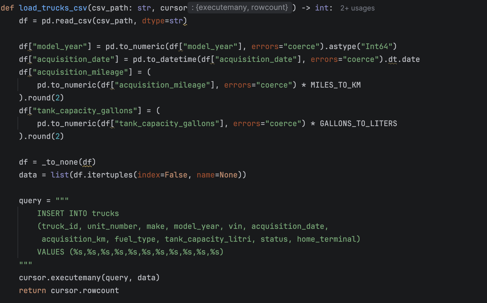

Pipeline dati
Pulire
Prima di entrare nel database, ogni CSV del dataset viene letto con pandas, tipizzato, portato al sistema metrico e ripulito da valori nulli e duplicati.

In breve
- Tipi correttiDate, interi, decimali e testo convertiti nei formati che lo schema del database si aspetta.
- Sistema metricoMiglia in chilometri, galloni in litri, libbre in chili. Anche i dollari diventano euro.
- Nulli sotto controlloOgni valore mancante è imputato, eliminato o marcato. I NaN di pandas arrivano in MySQL come NULL.
Cinque operazioni, un risultato
Ogni file passa dagli stessi controlli. In uscita: CSV puliti e tipizzati, pronti per il database relazionale.
- TipizzareOgni colonna nel suo tipo: date, interi, decimali, testo.
- Convertire le unitàDal sistema imperiale americano al metrico europeo.
- Gestire i nulliImputare, eliminare o marcare in base al peso del campo.
- Correggere le anomalieDuplicati, valori incoerenti o fuori intervallo.
- StandardizzareTesti e chiavi identificative uniformi, per collegare le tabelle.
- CSV pulitiPronti per il caricamento.
Le conversioni applicate
I fattori sono costanti definite in testa a pulizia_csv.py, usate da tutte le funzioni di caricamento.
| Grandezza | Da | A | Come | Colonne di esempio |
|---|---|---|---|---|
| Distanza | miglia | chilometri | × 1,60934 | actual_distance_miles |
| Volume | galloni USA | litri | × 3,78541 | fuel_gallons_used |
| Peso | libbre | chilogrammi | × 0,453592 | weight_lbs |
| Lunghezza | piedi | metri | × 0,3048 | length_feet |
| Consumo | miglia per gallone | litri per 100 km | 235,21 ÷ mpg | average_mpg |
| Valuta | dollari | euro | × 0,92 | revenue, total_cost |
Il cambio dollaro-euro è un tasso fisso indicativo, non quello storico giorno per giorno.
Dentro una funzione di pulizia
Ogni tabella ha la sua funzione load_*_csv: 14 in tutto. Questa è quella dei camion, dalla lettura del file all'inserimento.

load_trucks_csv in pulizia_csv.py. Clic per ingrandire.- Leggere tutto come testo
dtype=strevita che pandas indovini i tipi e sbagli. - Convertire e normalizzareAnno in numero, date nel formato giusto, miglia in km e galloni in litri.
- Trasformare i nulli
_to_nonecambia i NaN inNone, che MySQL registra come NULL. - Preparare le righeIl DataFrame diventa una lista di tuple, pronta per l'inserimento massivo.
- Inserire in sicurezzaQuery parametrizzata contro la SQL injection, eseguita in blocco con
executemany. Restituisce le righe inserite.